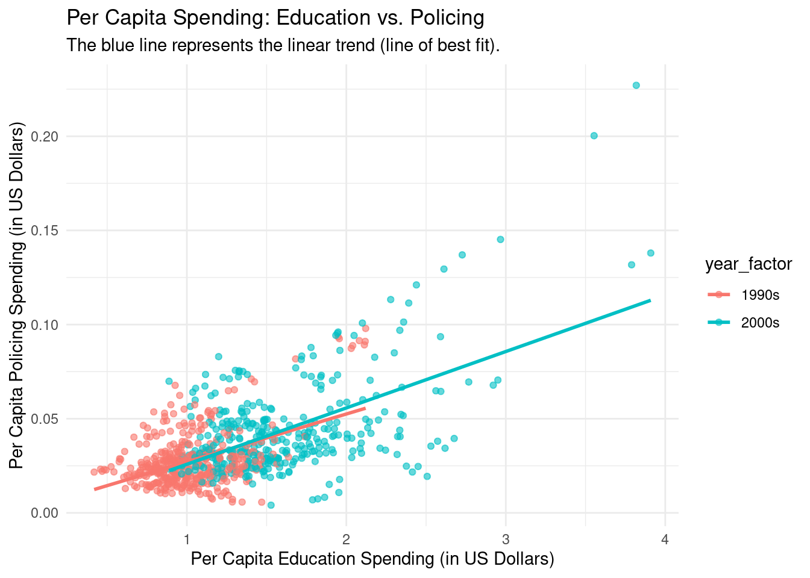

# Load the necessary libraries for data manipulation and visualization
# Suppress the package startup messages from tidyverse
suppressPackageStartupMessages(library(tidyverse))
# Define a function to calculate the equation for per capita spending
# This function takes the total spending and population as input
per_capita_equation <- function(total_spending, population) {
return(total_spending / population)
}
# Load the finance and population datasets
# Make sure these files are in the same directory as your R script
finance_df <- read.csv("../../finance.csv")
population_df <- read.csv("../../state-population.csv")
# Filter the population data to get only the total population for each state and year
total_population_df <- population_df %>%
filter(ages == "total") %>%
select(state_abbr = `state.region`, year, population)
# Create a mapping from full state names to abbreviations to fix the join issue
state_name_map <- data.frame(
State = c("ALABAMA", "ALASKA", "ARIZONA", "ARKANSAS", "CALIFORNIA", "COLORADO", "CONNECTICUT", "DELAWARE", "FLORIDA", "GEORGIA", "HAWAII", "IDAHO", "ILLINOIS", "INDIANA", "IOWA", "KANSAS", "KENTUCKY", "LOUISIANA", "MAINE", "MARYLAND", "MASSACHUSETTS", "MICHIGAN", "MINNESOTA", "MISSISSIPPI", "MISSOURI", "MONTANA", "NEBRASKA", "NEVADA", "NEW HAMPSHIRE", "NEW JERSEY", "NEW MEXICO", "NEW YORK", "NORTH CAROLINA", "NORTH DAKOTA", "OHIO", "OKLAHOMA", "OREGON", "PENNSYLVANIA", "RHODE ISLAND", "SOUTH CAROLINA", "SOUTH DAKOTA", "TENNESSEE", "TEXAS", "UTAH", "VERMONT", "VIRGINIA", "WASHINGTON", "WEST VIRGINIA", "WISCONSIN", "WYOMING"),
state_abbr = c("AL", "AK", "AZ", "AR", "CA", "CO", "CT", "DE", "FL", "GA", "HI", "ID", "IL", "IN", "IA", "KS", "KY", "LA", "ME", "MD", "MA", "MI", "MN", "MS", "MO", "MT", "NE", "NV", "NH", "NJ", "NM", "NY", "NC", "ND", "OH", "OK", "OR", "PA", "RI", "SC", "SD", "TN", "TX", "UT", "VT", "VA", "WA", "WV", "WI", "WY")
)
# Clean up the finance column names and join with the state abbreviation map
finance_with_abbr <- finance_df %>%
rename(state = State, year = Year) %>%
left_join(state_name_map, by = c("state" = "State"))
# Join the combined finance data with the population data using the new abbreviation column
combined_df <- finance_with_abbr %>%
left_join(total_population_df, by = c("state_abbr" = "state_abbr", "year")) %>%
drop_na(population)
# Calculate the per capita spending for education and policing
combined_df <- combined_df %>%
mutate(
per_capita_education_spending = per_capita_equation(`Details.Education.Education.Total`, population),
per_capita_policing_spending = per_capita_equation(`Details.Police.protection`, population)
)
combined_df$year_factor <- "1990s"
combined_df[combined_df$year > 1999, ]$year_factor <- "2000s"
# Create a scatter plot to compare per capita spending on education and policing
# Use capture.output to suppress any messages or warnings
capture.output({
suppressMessages(
suppressWarnings(
ggplot(combined_df, aes(x = per_capita_education_spending, y = per_capita_policing_spending, color = year_factor)) +
geom_point(alpha = 0.6) +
geom_smooth(method = "lm", se = FALSE) +
labs(
title = "Per Capita Spending: Education vs. Policing",
subtitle = "The blue line represents the linear trend (line of best fit).",
x = "Per Capita Education Spending (in US Dollars)",
y = "Per Capita Policing Spending (in US Dollars)"
) +
theme_minimal()
)
)
})`geom_smooth()` using formula = 'y ~ x'
character(0)